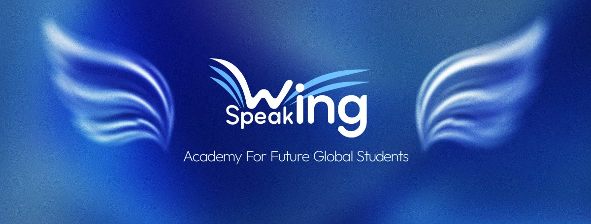
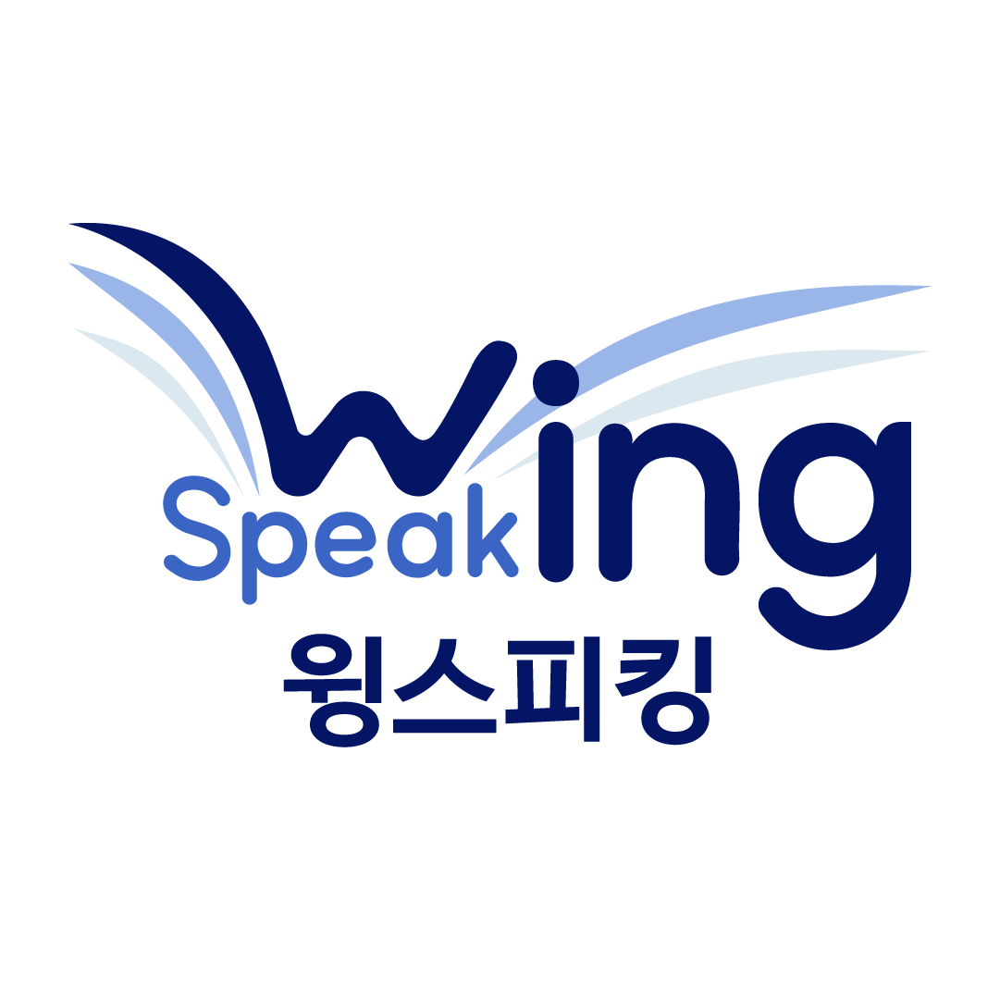
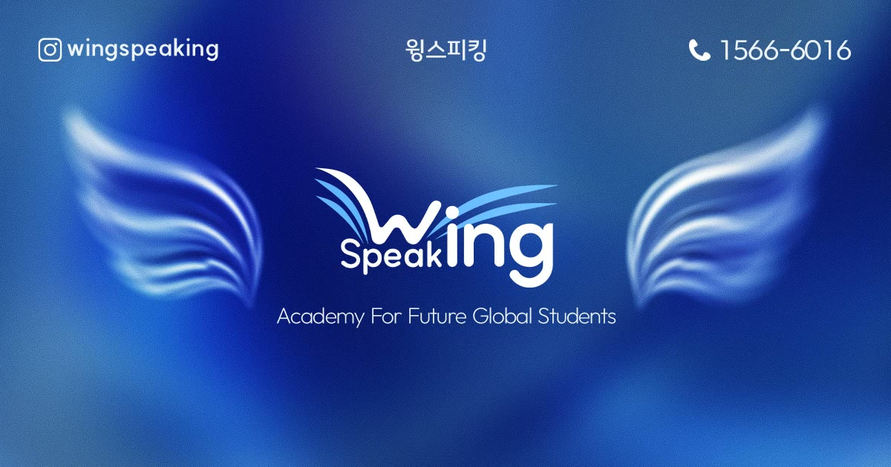
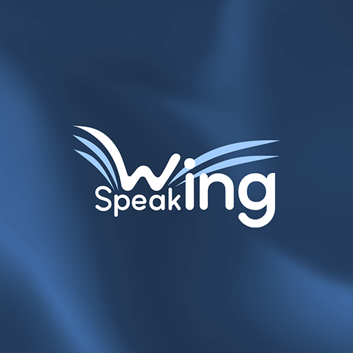

T-01
Logo & Brand Identity
날개(Wing)와 말하기(Speaking)를 하나의 워드마크로 엮었습니다. ‘Speak’ 위로 펼쳐진 세 겹의 날개가 W의 첫 획이 되어, 영어에 날개를 달고 꿈을 향해 날아오르는 학생을 그립니다. 대표 로고인 윙스피킹 강남 어학원을 기준으로 락업과 색, 적용 규칙을 하나의 가이드로 정리했고, 2호점 유학 센터는 같은 골격에 브라운과 오렌지를 입혀 서브 브랜드로 확장했습니다.
01 PRIMARY LOGO

02 CONSTRUCTION
03 LOCKUP
- HORIZONTAL가로형 · 웹 헤더 · 간판
- STACKED세로형 · SNS · 인쇄

- REVERSE반전 · 어두운 바탕

04 COLOR CODE
- PRIMARY네이비워드마크 · 대표 바탕
- HEX
- #031465
- RGB
- 3 20 101
- CMYK
- 97 80 0 60
- SECONDARY블루Speak · 강조
- HEX
- #3A64C2
- RGB
- 58 100 194
- CMYK
- 70 48 0 24
- WING스카이 블루날개 첫 획
- HEX
- #98B5E6
- RGB
- 152 181 230
- CMYK
- 34 21 0 10
- WING라이트 그레이 블루날개 둘째 획 · 바탕
- HEX
- #DAE7EE
- RGB
- 218 231 238
- CMYK
- 8 3 0 7
- SUB · 유학 센터다크 브라운유학 센터 바탕
- HEX
- #402D07
- RGB
- 64 45 7
- CMYK
- 0 30 89 75
- SUB · 유학 센터오렌지유학 센터 날개 · 강조
- HEX
- #F3993A
- RGB
- 243 153 58
- CMYK
- 0 37 76 5
05 APPLICATION
- WEB BANNER링크 공유 이미지 · 1200×630

- PROFILESNS 프로필
